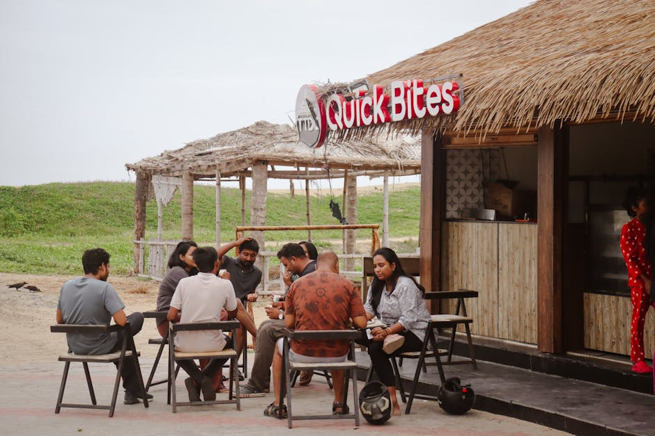

Il flusso digitale della cultura contemporanea.
Scopri le nuove prospettive sulle arti visive, il teatro, la letteratura e l'evoluzione della società italiana attraverso approfondimenti curati, recensioni e indagini indipendenti.

Le Nostre Aree di Indagine
Analizziamo le correnti più stimolanti del panorama culturale odierno, offrendo chiavi di lettura per comprendere la complessità del nostro tempo.

Arti Visive e Teatro
Esploriamo le mostre più innovative, le installazioni e le performance teatrali che stanno ridefinendo la scena artistica. Un'analisi critica delle opere che sfidano le convenzioni e lasciano un segno profondo nel panorama estetico attuale.
Letteratura ed Editoria
Recensioni puntuali delle ultime uscite editoriali, interviste agli autori e focus sui movimenti letterari emergenti. Mappiamo le parole e le storie che raccontano le contraddizioni, le speranze e le sfide della nostra epoca.
Società Italiana
Indagini approfondite sui cambiamenti sociali, i costumi e le tendenze che caratterizzano l'Italia di oggi. Un occhio attento alle dinamiche collettive, ai nuovi stili di vita e ai dibattiti che animano la sfera pubblica.
Eventi e Rassegne
Una visione d'insieme su tutto ciò che fa cultura contemporanea sul territorio nazionale. Selezioniamo rassegne cinematografiche indipendenti, festival culturali e appuntamenti imperdibili per i lettori più esigenti e curiosi.
La Nostra Visione Editoriale
Noi di SuffixerFlow crediamo che la cultura contemporanea sia un ecosistema vivace, fatto di idee, immagini e parole in continuo dialogo. Il nostro obiettivo editoriale è mappare questo territorio in costante evoluzione, offrendo ai nostri lettori uno sguardo lucido e appassionato sulle dinamiche della società italiana.
Operiamo come partner promozionale indipendente per far conoscere i contenuti d'eccellenza di ItalianCult. Attraverso la nostra piattaforma, portiamo alla luce le storie, le opere teatrali, le espressioni delle arti visive e la letteratura più innovativa che animano il dibattito culturale odierno, creando un ponte tra i creatori e un pubblico attento.
Cosa Dicono i Nostri Lettori
Le voci di chi segue quotidianamente i nostri approfondimenti.
"Le recensioni sulle arti visive sono sempre puntuali e mai banali. Ho scoperto mostre incredibili grazie ai loro consigli. Un punto di riferimento per chi ama la cultura contemporanea."
- Matteo R., Milano (2026)
"Apprezzo molto gli articoli di analisi sulla società italiana. Riescono a cogliere sfumature dei cambiamenti sociali che i media tradizionali spesso ignorano. Lettura consigliatissima."
- Elena C., Roma (2026)
"Il focus sul teatro è eccellente. Trovo spesso spunti interessanti per spettacoli di nicchia o sperimentali che altrimenti perderei. Ottimo lavoro editoriale."
- Giulia B., Torino (2026)
Domande Frequenti
Risposte alle curiosità più comuni sul nostro progetto editoriale.
Quali tematiche trattate principalmente nel blog?
Ci concentriamo principalmente sulla cultura contemporanea in Italia. Le nostre macro-aree includono le arti visive (mostre, installazioni), il teatro (dalla prosa alla sperimentazione), la letteratura (nuove uscite e critica) e l'analisi della società italiana nei suoi mutamenti quotidiani.
Con quale frequenza pubblicate nuovi approfondimenti?
Aggiorniamo le nostre sezioni regolarmente. Lavoriamo a stretto contatto con ItalianCult per garantire un flusso continuo di contenuti di qualità, proponendo articoli, recensioni e riflessioni con cadenza settimanale, per mantenere i lettori sempre informati sulle novità più rilevanti.
Posso proporre un mio articolo o una recensione?
Siamo sempre interessati a scoprire nuove voci e prospettive sulla cultura contemporanea. Sebbene la nostra linea editoriale sia curata internamente e in partnership con le fonti originali, accogliamo suggerimenti su temi da trattare o eventi da seguire tramite il nostro modulo di contatto.
Trattate solo cultura italiana o anche internazionale?
Il nostro focus principale è la società italiana e le sue espressioni artistiche. Tuttavia, la cultura contemporanea non ha confini rigidi: recensiamo spesso opere internazionali o movimenti globali quando questi hanno un impatto significativo o un dialogo diretto con il panorama culturale italiano.
Come selezionate gli eventi teatrali e le mostre da recensire?
La selezione avviene basandosi sull'innovazione, la rilevanza sociale e la capacità dell'opera di stimolare il pensiero critico. Cerchiamo di bilanciare grandi eventi istituzionali con produzioni indipendenti, per offrire una panoramica il più possibile completa e variegata delle arti visive e performative attuali.
Mettiti in Contatto
Hai suggerimenti su temi di società italiana o eventi di cultura contemporanea? Scrivici.
Redazione Online SuffixerFlow
Attivi dal Lunedì al Venerdì, 09:00 - 18:00
Promotori indipendenti della cultura contemporanea in Italia.